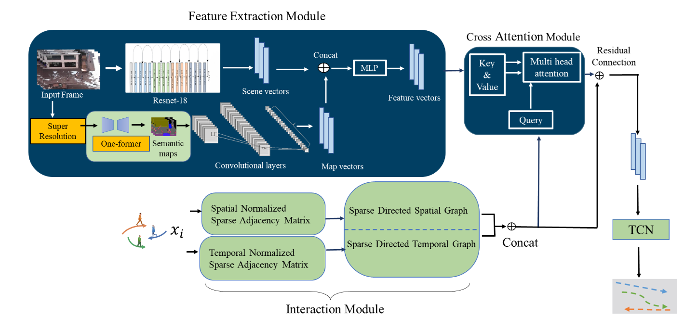

Where Do You Go? Pedestrian Trajectory Prediction using Scene Features
A scene-aware model that fuses visual, semantic, and motion cues with a Sparse Graph Convolutional Network to predict where pedestrians will go.
Summary
Predicting where a pedestrian will move next is one of the hardest and most safety-critical problems in autonomous driving. Most models lean heavily on a pedestrian’s own motion history — but a person’s path is shaped just as much by the scene around them: sidewalks, crossings, obstacles, and other road users.
This work takes a scene-aware approach. It brings together three complementary sources of information: pre-extracted visual features describing what the scene looks like, semantic maps that encode its layout, and numerical motion data such as past positions and velocities. These signals are fused and modeled with a Sparse Graph Convolutional Network, which captures the relevant interactions efficiently instead of treating every connection as equally important. The result grounds each prediction in the surrounding environment, not just past movement.

Key contributions
- Scene-aware prediction that fuses visual, semantic, and motion signals in a single model.
- A Sparse Graph Convolutional Network that keeps the interaction graph efficient and focused.
- A multimodal design aimed at realistic, safety-critical autonomous-driving scenarios.